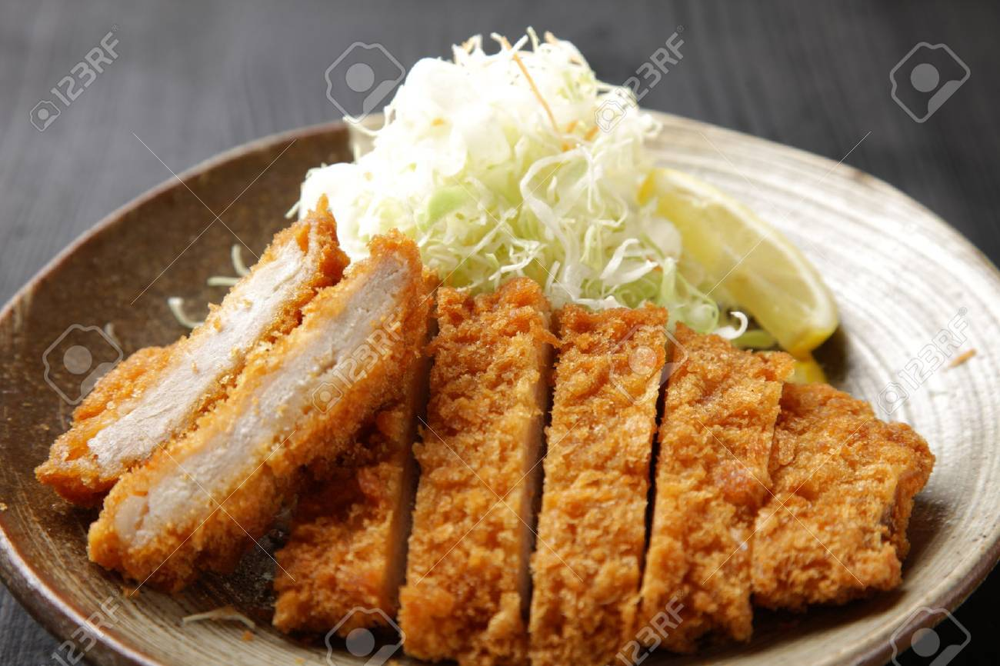

Japan Food Menu
돈카츠

재료 : 돼지고기 등심 600g, 밀가루 또는 부침가루 1컵, 계란 2개, 빵가루
①돈까스용 돼지고기는 고기용망치로 가볍게 두드려 주세요.
②작업이 끝난 고기를 우유에 담궈서 비린내를 제거합니다.(생략가능) 시간은 30분 정도면 충분!
③우유에 재어두었던 고기에 소금과 후추로 밑간을 하고 간에 베도록 10분정도 두세요. 저는 소금과 후추를 조금 많이 뿌리는 편인데 취향에 맞게 뿌리시면 되요.)
④밀가루(또는 부침가루)와 계란 빵가루를 준비해요.
⑤밀-계-빵 순으로 묻혀주기
⑥기름에 빵가루를 넣어서 3초정도 후 떠오르면 준비된 돈까스를 넣고 튀겨줍니다.
Mascot

Social Network Service